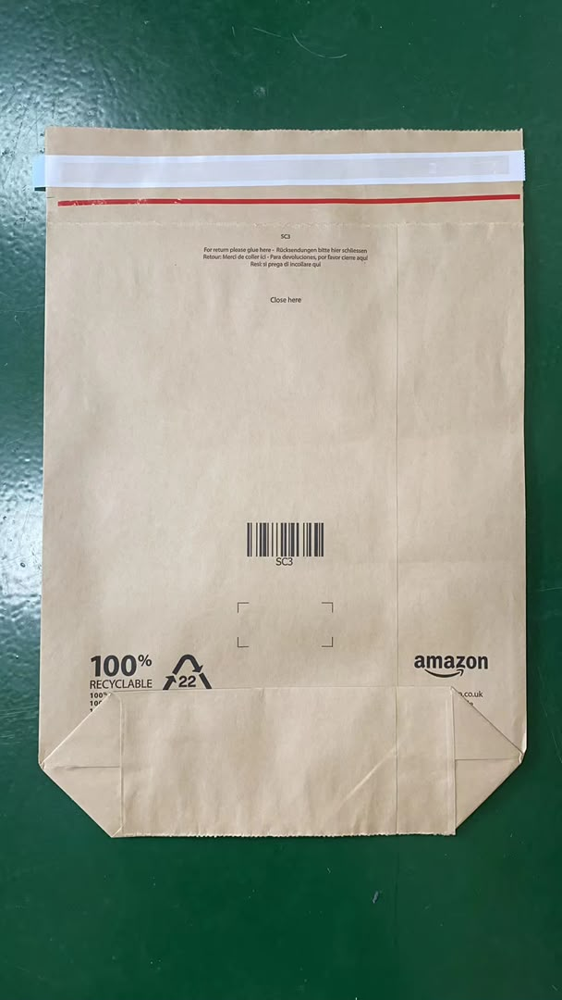
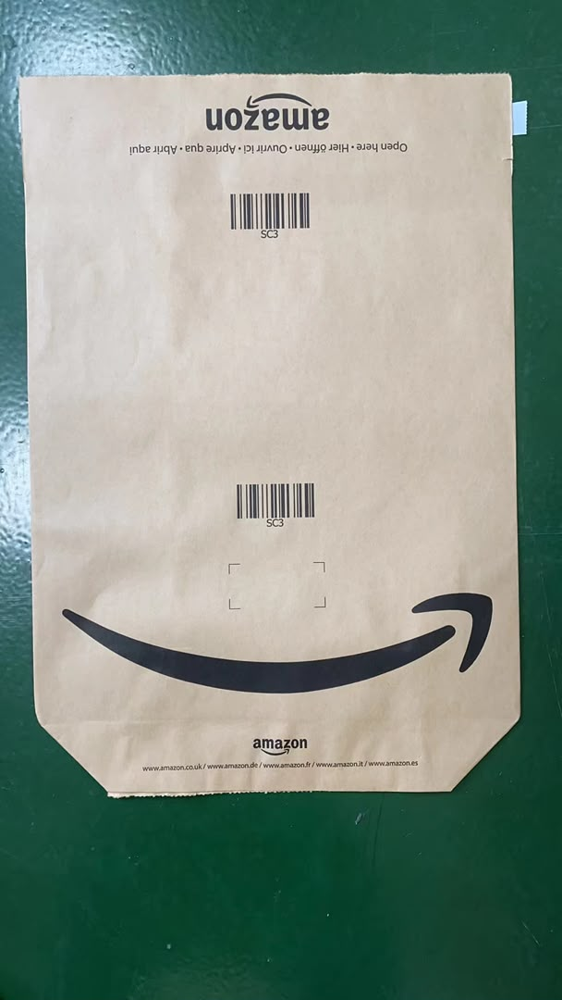

Packaging Teardown #1: Amazon's Paper Mailer — What a PPWR-Ready Claim Looks Like Up Close
This is the first in a new series: Packaging Teardown. No renders, no mockups — real packs from the real world, taken apart marking by marking, to see what their design decisions teach buyers sourcing packaging from China.
Specimen #1 is a kraft paper mailer from Amazon, collected in the field. Millions of these move across Europe every day, which makes it worth studying closely: every word printed on it is a compliance decision, and every compliance decision is a sourcing lesson. Here is the bag, front and back:


1. The Claim, Word by Word: "100% RECYCLABLE"
Start with the four words that do the heaviest lifting on the back panel. "100% RECYCLABLE" is doing three jobs at once, and each one is deliberate:
It is specific. It names one testable property — recyclability — not a vibe. Under the EU's Empowering Consumers Directive (Directive (EU) 2024/825, in force since 27 September 2026), generic claims like "eco-friendly" or "green" are banned unless backed by recognised excellent environmental performance. "Recyclable" points at a verifiable material fact: this mailer is unlaminated kraft paper, a single material, in a stream that paper mills actually process.
It is quantified. "100%" closes the whole-vs-part loophole. The directive bans claims about an entire pack that only describe one component of it — the classic case being "recyclable packaging" on a carton with a plastic window. Here the whole mailer is paper, so the whole-product claim holds. If your supplier proposes the same wording on a laminated pouch, that is the moment to stop the artwork.
It is paired with its evidence on the pack itself. Right next to the words sits the PAP 22 recycling symbol (more on that below) — the claim and its material basis, side by side, where any regulator, sorter or consumer can check one against the other.
One honest qualification a teardown should not skip: "recyclable" describes design for recyclability — the material, the single-material construction, the identifiable stream. Whether any given mailer actually gets recycled depends on collection and sorting infrastructure where the consumer lives. Buyers copying this claim should understand that distinction, because regulators are increasingly asking for exactly it. A claim that is true by design but presented without qualification is where the next enforcement wave will look.
2. PAP 22 — The Quiet Workhorse
The small triangle-and-number next to the claim is easy to overlook and hard to overstate. Under the EU's packaging material numbering system (Commission Decision 97/129/EC), PAP 20 is corrugated fibreboard, PAP 21 is non-corrugated fibreboard, and PAP 22 is paper. The code tells the sorting line and the consumer, at a glance, which stream the pack belongs to.
Under PPWR — Regulation (EU) 2025/40, whose core obligations are now enforceable — recyclability is assessed against design-for-recycling criteria. The logic starts one step earlier than most buyers think: a pack that cannot be identified cannot be sorted, and a pack that cannot be sorted cannot be recycled at scale. Material identification on the pack is the foundation the whole assessment stands on.
The sourcing lesson is practical: specify the identification code for the market of sale, not the market of manufacture. A Chinese supplier's default may be a domestic marking system, or none at all. If the pack lands in the EU, the code printed on it must be the one EU sorters and consumers read. Put it in the artwork spec, and check it on the printed pack — it is a two-cent detail that decides whether the recyclability story survives first contact with a sorting plant.
3. Five Languages on One Bag
Read the fine print around the seal: Open here · Hier öffnen · Ouvrir ici · Aprire qui · Abrir aquí. The return strip repeats the pattern: For return please glue here · Rücksendungen bitte hier schließen · … Five languages — English, German, French, Italian, Spanish — matching exactly the five storefronts printed at the bottom of the front panel.
This is the EU market reality in miniature. One bag design serves five countries, so the instructions must be understood in five countries. Under PPWR's labelling provisions, required information must be presented in a manner that is comprehensible where the packaging is placed on the market — a single-language instruction panel on a five-market pack is a compliance gap hiding in plain sight.
For buyers, the operational takeaway: artwork approval must cover every language panel, and it must cover the full flat, not a cropped mockup. A typo in the German line, a truncated Italian sentence where the text box ran short — these are reprint-grade errors, and they are invisible if QA only checks the hero panel. When your supplier sends artwork proof, ask for the complete dieline view.
4. What's Deliberately Missing
A teardown should also read the absences. There is no "eco-friendly" anywhere on this bag. No "green". No self-drawn leaf badge, no "carbon neutral", no planet imagery. Under the EmpCo directive, each of those would need substantiation or be banned outright — self-certified sustainability labels no longer count, and offset-based neutrality claims are prohibited.
The absence is the strategy. Every remaining mark earns its place: a claim with a material basis, a code with a defined meaning, instructions with a function, a barcode with a logistics job. When auditing your own artwork, the question is not only "can we prove this claim" — it is "does this mark need to be here at all". Most packaging artwork we review would get shorter, and more compliant, by subtraction.
5. The Functional Half Buyers Forget to Spec
Compliance gets the headlines, but mailers fail in warehouses, not courtrooms. The functional details on this specimen deserve the same teardown treatment:
Two adhesives, two jobs. The peel-and-seal strip closes the bag on first use; the second strip (under the red line) reseals it for returns — SC3 is Amazon's return-flow handling code. Seal strength, dust contamination on the adhesive, performance in a cold warehouse in January: all of it is specifiable, all of it is testable, and almost none of it appears on a typical buyer's RFQ, which stops at dimensions and print colors.
The folded, glued bottom. This is the load-bearing part of a mailer. A bottom that holds a t-shirt may not hold a hardcover book; burst and seam strength under real fill weights belong in the specification, verified on production samples — not discovered in the returns data.
The kraft itself. Which grade, which grammage, what recycled content, which supplier's paper machine. "Brown paper mailer" is not a specification; it is a color. The spec sheet behind the brown is where cost, strength and recyclability are actually decided — and where silent substitutions happen when prices move.
The Sourcing Takeaway: Five Lines for Your Next RFQ
If you are placing paper mailers — or any printed packaging — with a Chinese supplier for the EU market, take these five lines from the teardown into your next RFQ:
1. Pair every printed claim with its evidence before artwork approval. Certificate number, test standard, who holds the document, when it expires. "Our supplier assured us" is not evidence.
2. Specify material identification for the market of sale. PAP codes for the EU, the correct system for every other destination — in the artwork spec, verified on the printed pack.
3. Approve the full flat in every language. The complete dieline view, all language panels proofread. Cropped mockups hide reprint-grade errors.
4. Write functional specs, not just visual ones. Seal strength, grammage, seam construction — the parts that fail in warehouses.
5. Check the printed pack against the approved artwork before shipment. Artwork drifts between approval and mass production: a claim reworded by a designer, a logo re-added "because it looked empty", a substrate changed for cost. The pre-shipment check verifies the goods against the spec — and verifies the spec on paper is the spec on the line.
That is the thread running through this whole series: the product that ships should be the product the paperwork describes. Words on the bag included.
This article shares industry information for general guidance only and does not constitute legal advice. For formal compliance questions, please consult qualified regulatory counsel.